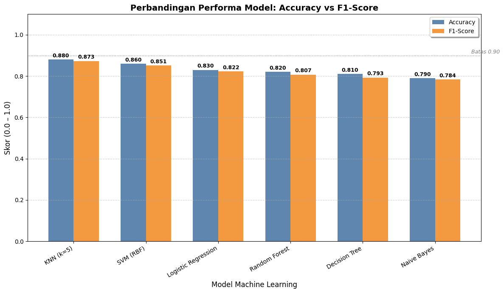
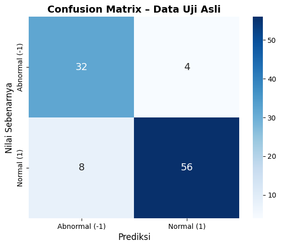

Modelling & Evaluasi Klasifikasi untuk Deteksi Abnormalitas ECG#
Import Library#
import numpy as np
import pandas as pd
import matplotlib.pyplot as plt
import seaborn as sns
import time
from sklearn.naive_bayes import GaussianNB
from sklearn.linear_model import LogisticRegression
from sklearn.tree import DecisionTreeClassifier
from sklearn.ensemble import RandomForestClassifier
from sklearn.neighbors import KNeighborsClassifier
from sklearn.svm import SVC
from sklearn.metrics import accuracy_score, f1_score
plt.style.use('default')
sns.set_palette("Set2")
Muat Data yang Sudah Dipreproses & Balanced#
# Muat data yang sudah melalui preprocessing dan balancing
X_train = np.load('ECG200/X_train_bal.npy')
y_train = np.load('ECG200/y_train_bal.npy')
X_test = np.load('ECG200/X_test_bal.npy')
y_test = np.load('ECG200/y_test_bal.npy')
print(f"✅ Data dimuat untuk benchmarking:")
print(f" - Train: {X_train.shape} | Label: {np.unique(y_train, return_counts=True)}")
print(f" - Test : {X_test.shape} | Label: {np.unique(y_test, return_counts=True)}")
✅ Data dimuat untuk benchmarking:
- Train: (138, 96) | Label: (array([-1, 1]), array([69, 69]))
- Test : (100, 96) | Label: (array([-1, 1]), array([36, 64]))
Training & Benchmarking Loop#
print("🚀 MEMULAI BENCHMARKING MODEL: Evaluasi Multi-Algoritma pada Dataset ECG200\n")
# Daftar model
models = {
"Naive Bayes": GaussianNB(),
"Logistic Regression": LogisticRegression(max_iter=1000, random_state=42),
"Decision Tree": DecisionTreeClassifier(random_state=42),
"Random Forest": RandomForestClassifier(n_estimators=100, random_state=42),
"KNN (k=5)": KNeighborsClassifier(n_neighbors=5),
"SVM (RBF)": SVC(kernel='rbf', probability=True, random_state=42)
}
results = []
rank = 1
for name, model in models.items():
start = time.time()
model.fit(X_train, y_train)
y_pred = model.predict(X_test)
acc = accuracy_score(y_test, y_pred)
f1 = f1_score(y_test, y_pred, average='macro')
elapsed = time.time() - start
results.append({
'Model': name,
'Accuracy': acc,
'F1_Score': f1,
'Time (s)': elapsed,
'Model_Obj': model # Simpan objek model asli
})
print(f"[{rank:02}] {name}")
print(f" → Akurasi : {acc:.4f}")
print(f" → F1-Score: {f1:.4f}")
print(f" → Waktu : {elapsed:.4f} detik\n")
rank += 1
# Urutkan berdasarkan F1-Score
df_results = pd.DataFrame(results).sort_values('F1_Score', ascending=False).reset_index(drop=True)
# Ambil model terbaik
winner_row = df_results.iloc[0] # ini Series
best_model_name = winner_row['Model']
best_model_obj = winner_row['Model_Obj'] # ✅ Ini objek model yang valid
print("🏆 MODEL TERBAIK BERDASARKAN F1-SCORE:")
print(f" Nama : {best_model_name}")
print(f" F1-Score : {winner_row['F1_Score']:.4f}")
print(f" Akurasi : {winner_row['Accuracy']:.4f}")
print(f" Waktu : {winner_row['Time (s)']:.4f} detik")
🚀 MEMULAI BENCHMARKING MODEL: Evaluasi Multi-Algoritma pada Dataset ECG200
[01] Naive Bayes
→ Akurasi : 0.7900
→ F1-Score: 0.7838
→ Waktu : 0.0046 detik
[02] Logistic Regression
→ Akurasi : 0.8300
→ F1-Score: 0.8222
→ Waktu : 0.0095 detik
[03] Decision Tree
→ Akurasi : 0.8100
→ F1-Score: 0.7926
→ Waktu : 0.0108 detik
[04] Random Forest
→ Akurasi : 0.8200
→ F1-Score: 0.8069
→ Waktu : 0.1796 detik
[05] KNN (k=5)
→ Akurasi : 0.8800
→ F1-Score: 0.8727
→ Waktu : 0.0042 detik
[06] SVM (RBF)
→ Akurasi : 0.8600
→ F1-Score: 0.8514
→ Waktu : 0.0054 detik
🏆 MODEL TERBAIK BERDASARKAN F1-SCORE:
Nama : KNN (k=5)
F1-Score : 0.8727
Akurasi : 0.8800
Waktu : 0.0042 detik
Visualisasi Komparasi Model#
print("\nVISUALISASI KOMPARASI MODEL (Diagram Batang)")
# Urutkan berdasarkan F1-Score (seperti hasil benchmarking)
df_plot = df_results.sort_values('F1_Score', ascending=False)
# Buat posisi untuk bar
x = np.arange(len(df_plot))
width = 0.35 # Lebar tiap batang
# Buat figur
plt.figure(figsize=(12, 7))
ax = plt.subplot(111)
# Plot dua metrik berdampingan
bars1 = ax.bar(x - width/2, df_plot['Accuracy'], width, label='Accuracy', color='#4E79A7', alpha=0.9)
bars2 = ax.bar(x + width/2, df_plot['F1_Score'], width, label='F1-Score', color='#F28E2B', alpha=0.9)
# Tambahkan nilai di atas batang
for bar in bars1:
ax.text(bar.get_x() + bar.get_width()/2, bar.get_height() + 0.005,
f'{bar.get_height():.3f}', ha='center', va='bottom', fontsize=9, fontweight='bold')
for bar in bars2:
ax.text(bar.get_x() + bar.get_width()/2, bar.get_height() + 0.005,
f'{bar.get_height():.3f}', ha='center', va='bottom', fontsize=9, fontweight='bold')
# Pengaturan sumbu
ax.set_xlabel('Model Machine Learning', fontsize=12)
ax.set_ylabel('Skor (0.0 – 1.0)', fontsize=12)
ax.set_title('Perbandingan Performa Model: Accuracy vs F1-Score', fontsize=14, fontweight='bold')
ax.set_xticks(x)
ax.set_xticklabels(df_plot['Model'], rotation=30, ha='right')
ax.set_ylim(0, 1.1)
ax.legend(loc='upper right', frameon=True, shadow=True)
ax.grid(axis='y', linestyle='--', alpha=0.6)
# Tambahkan garis horizontal di skor 0.9 sebagai referensi
ax.axhline(0.9, color='gray', linestyle=':', linewidth=1)
ax.text(len(df_plot)-0.5, 0.91, 'Batas 0.90', fontsize=9, color='gray', style='italic')
plt.tight_layout()
plt.show()
print("\n📊 Interpretasi:")
print(" - Batang biru = Akurasi, oranye = F1-Score.")
print(" - Semakin tinggi dan sejajar kedua batang, semakin stabil modelnya.")
print(" - Model dengan batang paling tinggi dianggap sangat baik untuk dataset ini.")
VISUALISASI KOMPARASI MODEL (Diagram Batang)

📊 Interpretasi:
- Batang biru = Akurasi, oranye = F1-Score.
- Semakin tinggi dan sejajar kedua batang, semakin stabil modelnya.
- Model dengan batang paling tinggi dianggap sangat baik untuk dataset ini.
Simpan Model Terbaik#
import joblib
# Simpan model terbaik untuk deploy
joblib.dump(best_model_obj, 'ECG200/best_model.pkl')
print(f"\n💾 Model terbaik ({best_model_name}) berhasil disimpan sebagai 'ECG200/best_model.pkl'")
💾 Model terbaik (KNN (k=5)) berhasil disimpan sebagai 'ECG200/best_model.pkl'
Evaluasi Model dan Analisis Performa#
Model terbaik (best_model.pkl) dievaluasi pada data uji asli (ECG200_TEST.arff) untuk mengukur kemampuannya dalam membedakan dua kondisi jantung:
Kelas
1: Normal heartbeatKelas
-1: Abnormal heartbeat (Myocardial Infarction)
Metrik evaluasi utama meliputi:
Akurasi: Persentase prediksi benar secara keseluruhan.
Presisi: Seberapa akurat prediksi “abnormal” yang dihasilkan model.
Recall (Sensitivity): Seberapa baik model mendeteksi semua kasus abnormal nyata.
F1-Score: Ukuran keseimbangan antara presisi dan recall — sangat penting dalam konteks medis.
Hasil di bawah ini dihitung secara otomatis dari data uji yang belum pernah dilihat selama pelatihan.
# Evaluasi Lengkap: Akurasi, Presisi, Recall, F1-Score + Confusion Matrix
import numpy as np
import pandas as pd
from scipy.io import arff
import joblib
import matplotlib.pyplot as plt
import seaborn as sns
from sklearn.metrics import (
accuracy_score,
precision_score,
recall_score,
f1_score,
classification_report,
confusion_matrix
)
# Muat model dan scaler
model = joblib.load('ECG200/best_model.pkl')
scaler = joblib.load('ECG200/scaler.pkl')
# Muat data uji asli
data_test, _ = arff.loadarff('ECG200/ECG200_TEST.arff')
df_test = pd.DataFrame(data_test)
# Siapkan data
X_test = df_test.iloc[:, :-1].values
y_test_true = df_test['target'].apply(lambda x: 1 if x == b'1' else -1).values
# Normalisasi dan prediksi
X_test_scaled = scaler.transform(X_test)
y_test_pred = model.predict(X_test_scaled)
# Hitung metrik utama
acc = accuracy_score(y_test_true, y_test_pred)
prec = precision_score(y_test_true, y_test_pred, average='macro')
rec = recall_score(y_test_true, y_test_pred, average='macro')
f1 = f1_score(y_test_true, y_test_pred, average='macro')
# Tampilkan metrik ringkas
print("🎯 METRIK EVALUASI UTAMA:")
print(f" • Akurasi : {acc:.4f}")
print(f" • Presisi : {prec:.4f}")
print(f" • Recall : {rec:.4f}")
print(f" • F1-Score: {f1:.4f}\n")
# Tampilkan classification report lengkap
print("📋 LAPORAN KLASIFIKASI (per kelas):")
print(classification_report(y_test_true, y_test_pred,
target_names=['Abnormal (-1)', 'Normal (1)']))
# Visualisasi Confusion Matrix
cm = confusion_matrix(y_test_true, y_test_pred)
plt.figure(figsize=(6, 5))
sns.heatmap(cm, annot=True, fmt='d', cmap='Blues',
xticklabels=['Abnormal (-1)', 'Normal (1)'],
yticklabels=['Abnormal (-1)', 'Normal (1)'],
annot_kws={"size": 14})
plt.title('Confusion Matrix – Data Uji Asli', fontsize=14, fontweight='bold')
plt.xlabel('Prediksi', fontsize=12)
plt.ylabel('Nilai Sebenarnya', fontsize=12)
plt.tight_layout()
plt.show()
🎯 METRIK EVALUASI UTAMA:
• Akurasi : 0.8800
• Presisi : 0.8667
• Recall : 0.8819
• F1-Score: 0.8727
📋 LAPORAN KLASIFIKASI (per kelas):
precision recall f1-score support
Abnormal (-1) 0.80 0.89 0.84 36
Normal (1) 0.93 0.88 0.90 64
accuracy 0.88 100
macro avg 0.87 0.88 0.87 100
weighted avg 0.89 0.88 0.88 100
